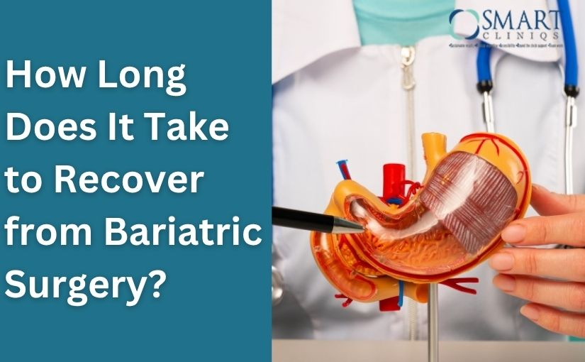

Bariatric surgery is a life-changing procedure that helps individuals achieve significant weight loss and improve their overall health. However, many people wonder, How long does it take to recover from bariatric surgery? The answer depends on several factors, such as the type of surgery, the patient’s health, lifestyle changes, and post-operative care.
In this detailed guide, we’ll walk you through the bariatric surgery recovery time, what to expect after surgery, tips for a smooth recovery, and when you can return to your normal activities.
How Long Does It Take to Recover from Bariatric Surgery?
“How long does it take to recover from bariatric surgery? The answer depends on factors, such as type of surgery, the patient’s health, and post-operative care."
Book Your Appointment TodayUnderstanding Bariatric Surgery
Before discussing the recovery phase, it’s important to understand what bariatric surgery involves.
Bariatric surgery includes several types of weight-loss surgeries such as gastric bypass, sleeve gastrectomy, and gastric banding. These procedures help reduce the size of your stomach or change your digestive process, making you feel full faster and consume fewer calories.
Dr. Atul Peter's is the Best Bariatric Surgeon in Delhi, performing advanced minimally invasive bariatric surgeries that ensure less pain, faster recovery, and better long-term outcomes.
How Long Does It Take to Recover from Bariatric Surgery?
Generally, recovery from bariatric surgery can take anywhere from 3 to 6 weeks, depending on the type of surgery and your body’s healing capacity. Let’s break it down further:
- Open Bariatric Surgery: Full Recovery may take 2 to 3 weeks due to larger incisions and longer healing time.
- Return to Normal Activities: Many patients can resume daily activities and normal routines in about 2-3 days.
However, full internal healing and adjustment to the new digestive process may take several months.
Bariatric Surgery Recovery Timeline

The recovery process happens in stages. Here’s a breakdown of what you can expect during each phase:
1. Immediately After Surgery (Day 1–2)
Once your bariatric procedure is completed, you’ll be shifted from the operating theatre to the post-operative recovery area or ICU for close observation. Pain management, IV fluids, and breathing exercises are provided to ensure comfort and prevent complications. Within a few hours, patients are encouraged to walk short distances to promote circulation and reduce clot risks.
2. Day 2–3: Hospital Recovery and Discharge
If your vital signs are stable and pain is manageable, you’ll be shifted to a private room and discharged within 1–2 days, depending on your age, body weight, and overall health. Before discharge, the dietician and care team will brief you on your home care instructions, including diet, movement, and medication guidance.
3. Week 1–2: Early Recovery and Phase II – Full Liquid Diet
At home, focus on rest, hydration, and gentle mobility. During this stage, your diet progresses to Phase II – Full Liquid Diet, which includes protein-rich fluids such as thin soups, protein shakes, and yogurt-based drinks.
Key tips from Dr. Peters’ post-surgery diet plan:
- Sip slowly and stop if you feel full or uncomfortable.
- Avoid skipping meals — eat at regular intervals.
- Begin using a protein supplement to preserve lean muscle mass.
- No carbonated beverages or sugary drinks.
Patients can resume basic household tasks within 2–3 days post-discharge, depending on energy levels, but should avoid lifting heavy objects.
4. Week 3–4: Transition and Phase III
By the third week, most patients feel stronger and can start Phase III – Puree Diet. This includes soft, blended foods like dalia, mashed vegetables, lentils, eggs, or soft fruits. Introduce one new food at a time to test tolerance.
Important guidelines:
- Prioritize protein-rich foods first.
- Chew slowly and eat small portions (150–200 ml per meal).
- Avoid meal skipping.
- Continue light exercise such as walking.
Many patients return to office or remote work during this phase if their job isn’t physically demanding.
5. Week 5–6: Phase IV – Soft to Normal Diet
This stage marks Phase IV – Gradual Transition to Normal Diet. You’ll shift from soft foods to small portions of a regular low-fat, high-protein diet. Avoid the 5 S’s — Sugar, Spirits, Straw, Soda, and Smoking — as they can hinder recovery and cause discomfort or bloating.
Mild activities such as swimming or yoga can be reintroduced after your surgeon’s approval. Energy levels rise noticeably, and your digestion starts adapting to your new stomach capacity.
6. 3–6 Months After Surgery: Long-Term Adjustment
In this long-term phase, your body fully adapts to the changes brought by surgery. Steady weight loss and improved metabolism become evident. Dr. Peters recommends:
- Maintaining a balanced diet with more proteins and fewer carbohydrates.
- Taking prescribed vitamins and iron supplements (iron usually begins after 1 month).
- Avoid overeating by listening to your body’s signals of fullness.
- Continue moderate physical activity to support sustained results.
Factors Affecting Recovery from Bariatric Surgery
While the average bariatric surgery recovery time ranges from a few weeks to a few months, several factors can influence it:
- Type of Surgery: Laparoscopic procedures usually have shorter recovery times.
- Overall Health: Healthier patients heal faster than those with pre-existing conditions like diabetes or heart disease.
- Post-Operative Care: Following dietary restrictions and exercise guidelines speeds up healing.
- Age: Younger patients generally recover faster.
- Lifestyle Habits: Non-smokers and those with healthy habits tend to have a smoother recovery.
Tips for a Smooth Recovery After Bariatric Surgery

Here are some practical tips to help you recover faster and safely:
- Follow Your Surgeon’s Advice: Always adhere to the instructions given by your surgeon and dietitian.
- Stay Hydrated: Drink enough water, but avoid gulping large quantities at once.
- Eat Slowly and Mindfully: Chew your food well and eat small, frequent meals.
- Take Prescribed Supplements: Bariatric surgery can reduce nutrient absorption, so supplements are crucial.
- Avoid Alcohol and Smoking: These can interfere with healing and nutrient absorption.
- Get Regular Exercise: Light physical activity aids digestion and prevents blood clots.
- Attend Follow-up Appointments: Regular checkups with Dr. Atul Peter's help monitor your progress and prevent complications.
Common Experiences During Recovery
It’s normal to experience a few temporary side effects during your recovery from bariatric surgery, such as:
- Fatigue or low energy
- Mild abdominal discomfort
- Changes in bowel habits
- Nausea (especially during diet transition)
- Emotional fluctuations
These effects usually improve as your body adjusts. However, if you experience severe pain, persistent vomiting, or fever, contact your doctor immediately.
Long-Term Recovery and Lifestyle Changes
Bariatric surgery is not just about physical recovery — it’s about adapting to a new lifestyle. Successful weight loss depends on your commitment to healthy habits post-surgery.
You’ll need to:
- Maintain a balanced diet high in protein and low in sugar.
- Stay physically active.
- Continue with prescribed vitamins and minerals.
- Avoid overeating or skipping meals.
Dr. Atul Peter's, known as one of the best Bariatric Surgeons, emphasizes the importance of lifestyle transformation for long-term success after surgery.
When Can You Return to Work and Normal Life?

Recovery after bariatric surgery is a gradual process that focuses on regaining strength safely and adapting to new lifestyle changes. Under the guidance of Dr. Atul Peters and his multidisciplinary team, patients are encouraged to move early and progressively return to normal life, depending on their overall health, age, and surgical procedure type.
- Light Activities (Within 2–3 Days):
Most patients can resume gentle movements such as walking and basic daily activities within 48–72 hours after surgery. This early mobility helps improve circulation, reduce stiffness, and promote faster healing. - Return to Work (After 7–10 Days):
For patients who undergo laparoscopic bariatric surgery, returning to desk or office jobs is generally possible within a week to 10 days, once energy levels stabilize and pain is minimal. - Moderate Physical Activities (After 3–4 Weeks):
By the third or fourth week, you can gradually include moderate activities like long walks, light household chores, or stationary cycling. Always ensure your diet and hydration are well-balanced during this phase. - Normal Routine and Exercise (After 6–8 Weeks):
Around 6 to 8 weeks post-surgery, patients can safely resume their normal routines and start low-impact workouts such as yoga or swimming. Any increase in intensity should be done only after your surgeon’s approval. - Heavy Lifting or Intense Workouts (After 3 Months):
Lifting heavy weights or engaging in strenuous physical exercise is usually permitted after three months, once your surgeon confirms complete healing and your nutritional intake supports recovery.
How Long Does It Take to Recover from Bariatric Surgery?
“How long does it take to recover from bariatric surgery? The answer depends on factors, such as type of surgery, the patient’s health, and post-operative care."
Book Your Appointment TodayConclusion
So, how long does it take to recover from bariatric surgery?
While most patients feel better within a few weeks, complete recovery — including internal healing and lifestyle adaptation — may take several months. The key to a successful outcome lies in following your doctor’s guidance, staying committed to dietary changes, and being patient with your body’s healing process. With the expertise of Dr. Atul Peter's, the Best Bariatric Surgeon in Delhi, you can expect a safe surgery, smooth recovery, and a healthier, more confident life ahead.
Frequently Asked Questions
1. How long does it take to recover from Bariatric Surgery?
2. How painful is the Bariatric Surgery recovery?
3. When can I start eating normal food after Bariatric Surgery?
Phase I: Clear liquids (first 2–4 days)
Phase II: Full liquids (up to 2 weeks)
Phase III: Pureed/soft foods (2–4 weeks)
Phase IV: Gradual return to a normal, balanced diet after 4–6 weeks
It’s crucial to follow the dietitian’s guidance and prioritize protein-rich foods while avoiding sugary, oily, and heavy meals.
4. When can I return to work after Bariatric Surgery?
5. How soon will I start losing weight?
6. What should I avoid after Bariatric Surgery?
These habits can cause bloating, discomfort, and interfere with weight loss or healing. Also, avoid overeating, skipping meals, or drinking liquids with meals.